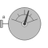
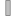

PartialAbsoluteSensorBase class for absolute sensor models |

|
Information
This information is part of the Modelica Standard Library maintained by the Modelica Association.
This is a base class of a 3-dim. mechanical component with one frame frame_a in order to measure an absolute quantity of this connector. This partial class can be used for sensors defined either by components or by equations.
Connectors (1)
|  | frame_a |
Type: Frame_a Description: Coordinate system a of which the absolute kinematic quantities are measured |
|---|
Extended by (5)
|
Modelica.Mechanics.MultiBody.Sensors Measure absolute angular velocity of frame connector |
|
|
Modelica.Mechanics.MultiBody.Sensors Measure absolute angles between frame connector and the world frame |
|
|
Modelica.Mechanics.MultiBody.Sensors Measure absolute velocity vector of origin of frame connector |
|
|
Modelica.Mechanics.MultiBody.Sensors Measure absolute position vector of the origin of a frame connector |
|
|
Modelica.Mechanics.MultiBody.Sensors Measure absolute kinematic quantities of frame connector |